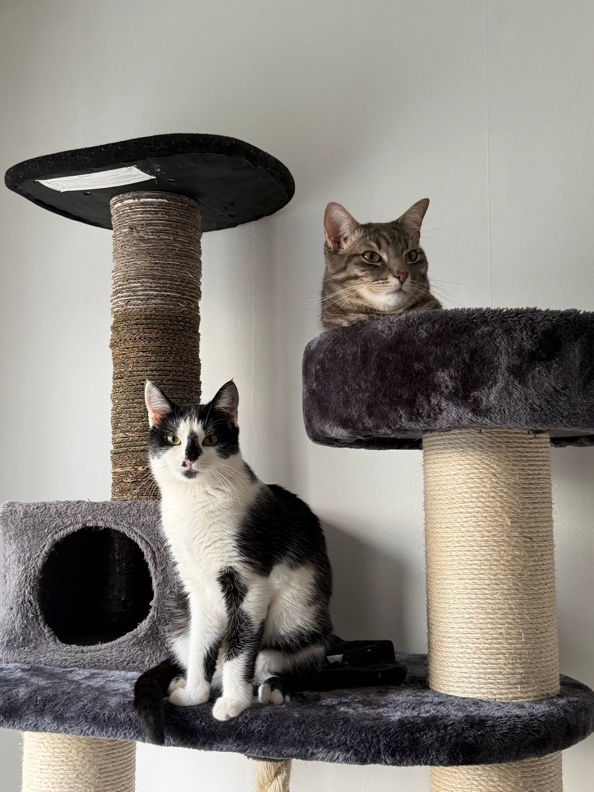
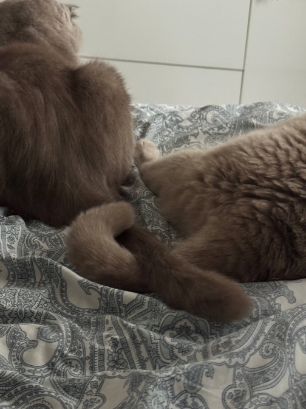
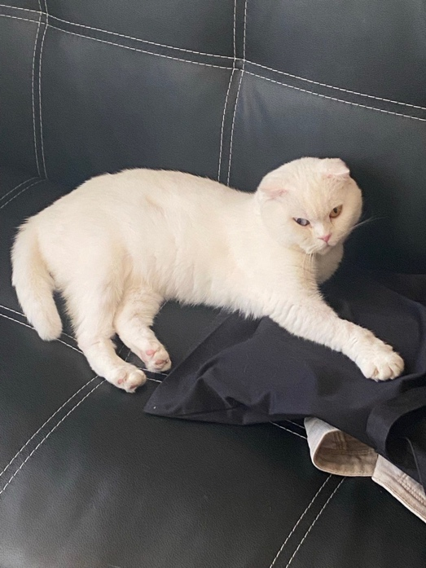
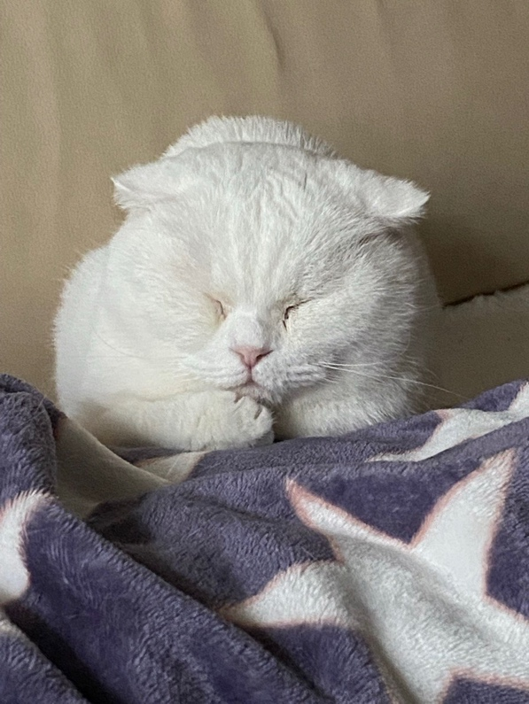

Любов, що не має кордонів: історії порятунку, втрат та повернення за своїми улюбленцями
Квиток у нове життя
Любові до тварин неможливо навчитися, з нею можна тільки народитися. Саме такою людиною з добрим серцем є моя близька подруга Вероніка Бикова. Через повномасштабне вторгнення Вероніка разом із родиною переїхала з Херсона до містечка Нант у Франції. Ніка завжди славилася любов’ю до тварин, активно їх захищає та не уявляє своє життя без двох хвостиків, які мають цікаву історію.
Шериф – кіт із французького притулку, якому родина Ніки подарувала справжню домівку. Він дуже активний та зміг додати у квартиру неймовірний комфорт, спокій та бажання якнайшвидше повертатися додому. Проте Ніка та її батьки подумали, що йому буде доволі сумно одному, і вирішили взяти кота вже з нашої рідної країни.
 «Все
почалося з того, що я побачила відео в ТikTok
одного притулку для кішок. Meow.house.kiev рятує
тварин з гарячих точок України та від важких умов виживання на вулиці. В моїй
голові виникла думка, що я хочу врятувати когось та подарувати кішці з вулиці
справжній теплий дім», - розповідає Ніка. Це справді був важкий вибір. Адже,
переглядаючи сторінку притулку, хочеться забрати кожного. Але серце Ніки одразу
обрало маленьку чорно-білу кішечку, та вона одразу зрозуміла, що це доля. Притулок
перевірив майбутню господиню: чи добра вона, чи знає, як правильно годувати та
лікувати тварину. Також Ніка заповнила анкету, в якій вона відповідала на питання
про стерилізацію, годування, вакцинацію та інші базові речі щодо догляду за котиками.
Оскільки в неї вже є Шериф, жодних проблем не виникло. Варто відзначити, що
притулок і справді ретельно перевіряє людей, тож котики потрапляють у добрі
руки до господарів, які готові взяти на себе відповідальність.
«Все
почалося з того, що я побачила відео в ТikTok
одного притулку для кішок. Meow.house.kiev рятує
тварин з гарячих точок України та від важких умов виживання на вулиці. В моїй
голові виникла думка, що я хочу врятувати когось та подарувати кішці з вулиці
справжній теплий дім», - розповідає Ніка. Це справді був важкий вибір. Адже,
переглядаючи сторінку притулку, хочеться забрати кожного. Але серце Ніки одразу
обрало маленьку чорно-білу кішечку, та вона одразу зрозуміла, що це доля. Притулок
перевірив майбутню господиню: чи добра вона, чи знає, як правильно годувати та
лікувати тварину. Також Ніка заповнила анкету, в якій вона відповідала на питання
про стерилізацію, годування, вакцинацію та інші базові речі щодо догляду за котиками.
Оскільки в неї вже є Шериф, жодних проблем не виникло. Варто відзначити, що
притулок і справді ретельно перевіряє людей, тож котики потрапляють у добрі
руки до господарів, які готові взяти на себе відповідальність.
 Так
і почалася підготовка кішки до її дороги. На стерилізацію, медичні обстеження
та підготовку документів пішло два місяці, протягом яких Ніка дуже сильно
хвилювалася. Притулок запропонував відвезти кішку до Кракова, а вже звідти її
мали б забрати знайомі перевізники до самого Нанта. «Я переживала, що будуть
труднощі на кордоні або в дорозі, проте нічого з цього не сталося. Всі, хто займався
перевезенням моєї кішки були відповідальними і завжди надсилали мені
фотографії», - згадує Ніка.
Так
і почалася підготовка кішки до її дороги. На стерилізацію, медичні обстеження
та підготовку документів пішло два місяці, протягом яких Ніка дуже сильно
хвилювалася. Притулок запропонував відвезти кішку до Кракова, а вже звідти її
мали б забрати знайомі перевізники до самого Нанта. «Я переживала, що будуть
труднощі на кордоні або в дорозі, проте нічого з цього не сталося. Всі, хто займався
перевезенням моєї кішки були відповідальними і завжди надсилали мені
фотографії», - згадує Ніка.

Так в її родині з'явилася Мерліша. З 9 січня кішечка живе разом із Нікою та Шерифом. Вона здолала такий великий шлях і нарешті опинилася в справжньому домі, серед теплоти, турботи та в безпеці. «Тварини страждають від війни так само, як і ми. Взявши улюбленця з вулиці, ви робите собі величезну інвестицію в майбутньому у вигляді безкорисливого та щирого кохання. Врятувати всіх, на жаль, неможливо, але допомогти одній або двом тваринам з гарячих точок, або з вулиці -так. Якщо подарувати їм сім'ю, затишок та будинок - вони назавжди будуть вам вдячні», - ділиться Ніка.Для справжнього кохання немає кордонів. Так українці рятують тварин та відвозять їх у безпечне місце, даруючи безпеку. І поки існуватимуть такі добрі люди, у нашого суспільства має всі шанси залишатися і далі людьми. Адже допомагати своїм людям та рятувати тварин можна і на відстані, Вероніка це довела.
Своїх не лишають
Через війну багато українців дізналися як це: зібрати життя в одну валізу й їхати невідомо куди. В такий момент ти не можеш подбати навіть про себе, вже не кажучи про малих пухнастиків. Саме таке сталося з Оленою Лузгіною при виїзді з окупованого Херсона в березні 2022 року. Тоді вони з донькою Аріною прийняли непросте, проте важливе рішення: залишити тимчасово кота Ваську свекрусі, адже вони не були впевнені, що взагалі зможуть покинути місто і скільки це займе часу. Васька – великий сірий висловухий кіт, який став найкращим другом для Аріни ще в її дитинстві та був поруч кожного дня протягом 4 років.
 «В
той момент я взагалі не переживала, а навпаки була рада за нього, адже він
лишився в знайомому середовищі з близькими людьми. Такій стабільності ми могли
лише заздрити, адже вели кочовий спосіб життя пів року», - згадує Олена. Проте не
думайте, що про нього забули, ні в якому разі. Пізніше свекруха Олени також
вирішила виїжджати з окупації та лишила Ваську та свою кішку Феню своїй
знайомій. Вона сподівалась, що та нагляне за котами, бо гроші на їх корм та
інші потреби Олена пересилала регулярно. Але виявилося, що та жінка навіть
найдешевшого корму не купує, а кормить котів якимось вареним рисом.
«В
той момент я взагалі не переживала, а навпаки була рада за нього, адже він
лишився в знайомому середовищі з близькими людьми. Такій стабільності ми могли
лише заздрити, адже вели кочовий спосіб життя пів року», - згадує Олена. Проте не
думайте, що про нього забули, ні в якому разі. Пізніше свекруха Олени також
вирішила виїжджати з окупації та лишила Ваську та свою кішку Феню своїй
знайомій. Вона сподівалась, що та нагляне за котами, бо гроші на їх корм та
інші потреби Олена пересилала регулярно. Але виявилося, що та жінка навіть
найдешевшого корму не купує, а кормить котів якимось вареним рисом.
 «Я
була розлючена та знала, що будь яким способом поверну свого кота. Він взагалі
вижив тільки завдяки своєму жиру. Мені пощастило, що Херсон деокупували доволі
швидко після того, як я дізналася про умови для Васьки», - ділиться Олена. Тоді
вона одразу поїхала з Бухаресту назад додому, розуміючи, яка нестабільна
ситуація в Херсоні, проте не могла кинути свого улюбленця. Тоді до Румунії
виїхала ще Феня, кішечка свекрухи, яку Олена не змогла
«Я
була розлючена та знала, що будь яким способом поверну свого кота. Він взагалі
вижив тільки завдяки своєму жиру. Мені пощастило, що Херсон деокупували доволі
швидко після того, як я дізналася про умови для Васьки», - ділиться Олена. Тоді
вона одразу поїхала з Бухаресту назад додому, розуміючи, яка нестабільна
ситуація в Херсоні, проте не могла кинути свого улюбленця. Тоді до Румунії
виїхала ще Феня, кішечка свекрухи, яку Олена не змогла

залишити з такими безвідповідальними людьми.Іноді війна не лише забирає, але щось дає натомість. Так в родині Олени з’явилася ще одна кішечка, яка і досі живе з ними. «З котами дуже важко закордоном, особливо, коли кожного дня можливий переїзд чи будь-які інші зміни. Але це повністю наша відповідальність, я б не змогла жити, знаючи, що Ваську чи Феню змучили голодом. Вони ж наші, тому мають бути з нами», - зізнається Олена.
Така історія, на жаль, не є винятком. Завдяки свідомій позиції та власних можливостей Олени ці котики мали шанс на комфортне існування, проте скільки пухнастиків помирають через жадібність та егоїзм людини. Пам’ятаємо, що якщо ви і вирішили завести улюбленця, то маєте розуміти всі ті обов’язки та вагу відповідальності, адже тварини такі самі повноправні члени родини.
Ціна безвідповідальності
Існує дуже багато ситуацій, через які немає можливості забрати пухнастиків разом із собою. І тоді постає питання, як влаштувати їм далі комфортне життя, розуміючи, який стрес їм доведеться пережити, звикаючи до нових реалій. Саме така ситуація сталася з моєю подругою, Шанталь Бенюх-Комаровською (далі в тексті Шаня), яка через війну залишила двох своїх шотландських котиків у подруги їхньої родини. Проте, вся ця історія закінчилась доволі трагічно, і це також змушує замислитись, кому ми можемо довірити життя власних улюбленців. Але про все по

порядку.На момент початку повномасштабного вторгнення котикам було 4 та 5 років. Робін -чорненький шотландський висловухий кіт був наче рідним сином для Шані. Аліса – кішечка на рік молодша, також висловуха, проте альбіноска та повністю глуха, тому потребувала трохи більшого догляду за собою. Під час окупації, коли родина Шані переїжджала з різних районів Херсона, вони завжди були з ними. І коли довелося зібрати все життя в один автомобіль, першими в салоні опинилися переноски з Робіном та Алісою. В Одесі вони жили усі разом, але потім Шаня разом з мамою вирішили, що треба виїжджати за кордон. Їхні родичі живуть в невеличкому місті в Великій Британії. Вони пообіцяли допомогти з житлом на перший час та з оформленням документів, тому було вирішено поїхати туди. Через те, що в будинку живуть дві великі собаки породи хаскі, а також кіт, дівчата вирішили на перший час залишити Робіна та Алісу в спеціальному притулку, і платили за утримання котиків щомісячно. Шаня зрозуміла, що для улюбленців це доволі стресова атмосфера, тому шукала знайомих, які змогли б наглянути за котиками. Так вона зателефонувала дуже близькій подрузі своєї мами, в якої також є кішка, яку привела у цей світ Аліса. За бажанням Шані, ім'я цієї жінки не буде названо, і в цьому тексті воно змінено на Ангеліна.
Спочатку
все було добре, адже Ангеліна мала приватний будинок, на території якого котики
могли вільно пересуватися, та там нічого не загрожувало їхньому життю. Дівчата
домовились, що як тільки Робіну та Алісі був потрібен корм, наповнювач, чи щось
додаткове - вони одразу переказували кошти. Звичайно, Ангеліна також  отримувала
оплату за догляд. Вона забирала залишок з щомісячного переказу. Варто
зазначити, що котики звикли до якісного харчування, тож Ангеліна знала, який
конкретний корм треба купувати та отримувала на нього кошти.
отримувала
оплату за догляд. Вона забирала залишок з щомісячного переказу. Варто
зазначити, що котики звикли до якісного харчування, тож Ангеліна знала, який
конкретний корм треба купувати та отримувала на нього кошти.

Усі апартаменти в Великій Британії, які знаходили Шаня та її мама, були з вказівкою без домашніх улюбленців, тому цей період на відстані доволі затягнувся. Проте вони приїжджали кожного року в Україну та відвідували своїх котиків. В якийсь момент фото з улюбленцями з'являлося в чаті все менше, а потім Шаня отримала дзвінок і дізналася, що Робіну стало погано, та вони їдуть до ветеринара. Там, коту у віці 7 років діагностували анорексію. «Я взагалі не розумію, як Робін зміг так схуднути. Він завжди вередує та нявкає, коли корму немає протягом двох або трьох годин. Він завжди в мене був «кабанчиком» та важив понад п'ять кілограмів», - згадує Шаня. Після тижневої боротьби лікарів за життя Робіна, він помер. Як потім дізналася Шаня, Ангеліна таємно почала купувати найдешевший корм, аби різниця з переказів коштів для її особистого користування стала більшою. Вона жодного разу не казала про підвищення оплати за догляд, а просто намагалася привчити котів до дешевшого корму. На жаль, через особливості цієї породи, їм треба дуже збалансоване харчування з багатьма вітамінами у складі, саме тому і був обраний цей корм.«Вони справді у мене розбалувані, але ми ніколи не намагалися економити на харчуванні котів. Адже після одного невдалого експерименту, коли вони блювали цілий день, ми зрозуміли, що це неможливо. Алісі просто пощастило, бо вона завжди була міцнішою, ніж Робін. У нас в родині ходив жарт, що Аліса переживе ще всіх нас», - з сумною посмішкою додає Шаня.
 Після
цієї ситуації з Ангеліною були розірвані усі стосунки, а Алісу забрала інша
подруга матері Шані, яка наполягла на перевірці Робіна у ветеринара. «Я знаю,
що в той момент не могла вплинути на це, проте мені досі соромно за те, що я не
змогла бути з Робіном в його останні хвилини життя. Він був неймовірним та
розумів мої емоції. Робін завжди приходив і просто сидів поряд зі мною, коли
мені було погано. І мені сумно, що я не змогла з ним навіть попрощатися», -
ділиться Шаня.
Після
цієї ситуації з Ангеліною були розірвані усі стосунки, а Алісу забрала інша
подруга матері Шані, яка наполягла на перевірці Робіна у ветеринара. «Я знаю,
що в той момент не могла вплинути на це, проте мені досі соромно за те, що я не
змогла бути з Робіном в його останні хвилини життя. Він був неймовірним та
розумів мої емоції. Робін завжди приходив і просто сидів поряд зі мною, коли
мені було погано. І мені сумно, що я не змогла з ним навіть попрощатися», -
ділиться Шаня.
Звичайно, ніхто не зможе попіклуватися про твою тварину краще, ніж ти сам. Але існують ситуації, коли уся надія на твого найближчого друга. Якщо вже і брати відповідальність, то до кінця, і обговорювати усі умови чесно. Іноді навіть, здавалося б, незначні зміни можуть так кардинально вплинути на чуже життя. Краще відмовитись, якщо розумієте, що не можете взяти на себе таку відповідальність.
Війна змінила життя кожного і на деякі події ми ніяк не могли вплинути, але вони мали наслідки для наших улюбленців. Приємно бачити, що багато людей роблять усе можливе заради тварин, адже вони дуже вразливі. Головне – не кидайте їх, адже у ваших руках повноцінне життя, хай навіть і меншого створіння. Знайдіть притулок, друзів чи сусідів, проте не забувайте перевіряти їх на доброчесність, адже взяти тварину – це також нести відповідальність за усе її життя, що також має ціну та охороняється законом України.
Кірвас Дарʼя